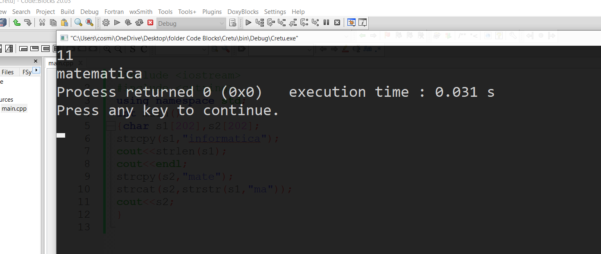
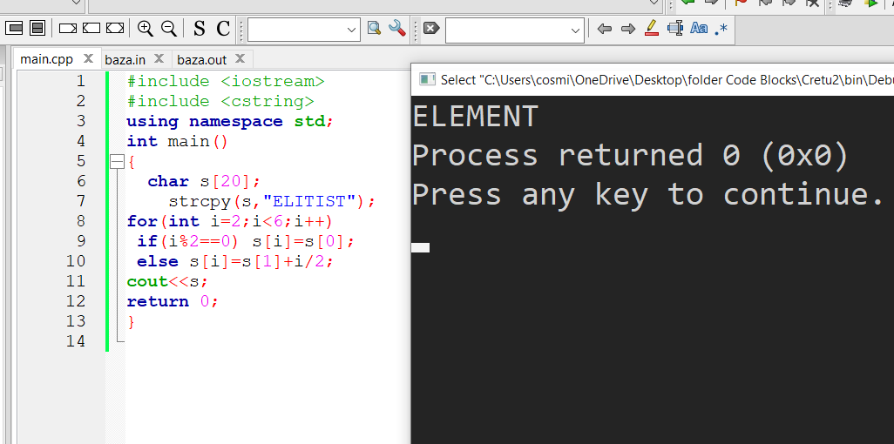

În orice sistem de calcul, datele – de orice tip – se memorează sub formă de numere. Mai mult, acestea se reprezintă în baza 2. În consecință, pentru a memora în calculator caractere este necesară utilizarea unei reprezentări a caracterelor prin numere. O astfel de reprezentare este Codul ASCII.
Introducere ASCII este o formă de reprezentare în calculator a caracterelor folosită în toate limbajele de programare studiate în liceu, alături eventual de alte reprezentări.
Codul ASCII standard codifică caracterele folosind 7 biți, astfel că permite codificarea a 2^7=128 caractere. Nu sunt prea multe! De fapt sunt codificate numai literele din alfabetul englez, cifrele de la 0 la 9, semnele de punctuație și operatorii, precum și alte simboluri. Lipsesc cu desăvârșire literele specifice altor alfabete latine (așa numite litere cu diacritice, precum ar fi ă Ă î Î â Â ș Ș ț Ț ş Ş Ţ ţ (observăm că sunt două feluri de Ș și doua feluri de Ţ, dar despre acest fapt vom discuta în alt articol ), precum și literele din alte alfabete: chirilic, ebraic, arab, chinez, etc. Pentru memorarea acestor litere se poate folosi codul ASCII Extins, sau codul UNICODE.
Prin codul ASCII, fiecărui caractere reprezentat în acest cod i se asociază un număr. Aceste numere (numite chiar coduri ASCII) se găsesc în intervalul 0 .. 127. Caracterele ASCII se împart în două categorii:
• caractere imprimabile – cele cu codurile ASCII în intervalul 32 126, inclusiv capetele: aici se regăsesc toate caracterele care au o reprezentare grafică bine determinată:
• literele mari: A ... Z,
• literele mici: a ... z,
• cifrele 0 .. 9,
• semnele de punctuaţie .,:;!?'"
• caractere ce reprezintă operaţii aritmetice sau de alt tip: + - / * <> = (){}[]
• alte caractere: ~`@#$%^&_\|
• caracterul spaţiu
• caracterele neimprimabile, sau de control – cu codurile 0 .. 31 și 127. Ele erau folosit mai demult pentru a controla transmiterea datelor. Caracterele neimprimabile nu au o reprezentare grafică bine determinată – în funcţie de sistemul operare folosit, reprezentările grafice ale acestor caractere pot fi foarte diferite, sau chiar să lipsească cu totul. Dintre aceste caractere amintim două, de o importanţă mai mare în limbajele de programare studiate:
• caracterul cu codul 0, numit și caracter nul, notat în C++ cu '\0' – reprezintă finalul unui șir de caractere în memorie
• caracterul cu codul 10, numit Line Feed, notat în C++ cu '\n' – produce trecerea la rând nou atunci când este afișat pe ecran sau într-un fișier.
Observaţii utile • literele mari și literele mici sunt diferite – au coduri ASCII diferite
• codurile ASCII ale literelor mari (sau mici) sunt în ordine: 'A' are codul 65, 'B' are codul 66,.., 'Z' are codul 90. Două caractere consecutive în alfabet au coduri ASCII consecutive! De asemenea, litera 'a' are codul 97, etc.
• codurile ASCII ale literelor mici sunt mai mari decât codurile ASCII ale literelor mari ('a' > 'Z') și diferenţă între codurile ASCII a două litere (mică – mare) este 32.
• cifrele au coduri consecutive: caracterul '0' are codul 48, caracterul '1' are codul 49, etc. *Observăm că caracterul '0' nu are codul ASCII 0, ci 48.
• caracterul spaţiu este un caracter imprimabil. Spațiul are codul ASCII 32.
Șiruri de caractere
În C++ există mai multe modalități de a reprezenta șirurile de caractere. În acest articol vom discuta despre șirurile de caractere reprezentate ca tablouri unidimensionale cu elemente de tip char, reprezentare care provine din limbajul C.
Aceste șiruri se mai numesc null-terminated byte string (NTBS). În reprezentarea internă, după ultimul caracter (byte, octet) valid din șir se află caracterul '\0' – caracterul cu codul ASCII 0, numit și caracter nul.
Astfel, pentru reprezentarea în C/C++ a cuvântului copil, care are 5 caractere, se vor folosi 6 octeți, cu valorile: 'c', 'o', 'p', 'i', 'l', '\0'.
Declararea unui șir de caractere
char s[11];
Citirea unui șir de caractere
cin >> s; //În acest mod, datorită specificului operatorului >> nu sepot citi șiruri care conțin spații – se vor citi caracterele
până la primul spațiu, fără acesta.
cin.getline(s , 11); //Am putea spune că getline citește toată linia și sare peste ENTER
Funcții pentru șiruri de caractere
strlen
std::size_t strlen( const char* str );
Returnează lungimea șirului str, adică numărul de caractere din șirul al cărui prim caracter se află la adresa memorată în str. Caracterul nul nu se numără.
Copiază cel mult count caractere din șirul aflat la adresa src, în șirul al cărui prim element se află la adresa din dest.
În șirul dest nu se va plasa caracterul nul după cele count caractere copiate.
Funcția returnează adresa dest.
Adaugă (concatenează) caracterele din șirul aflat la adresa src, inclusiv caracterul nul, la șirul al cărui prim element se află la adresa din dest.
Funcția returnează adresa dest.
Caută caracterul ch în șirul al cărui prim caracter se află în memorie la adresa din str.
Funcția returnează adresa NULL, dacă caracterul ch nu apare în șirul str, respectiva adresa primei apariții al lui ch în str, dacă ch apare în str.
char s[21]="pbinfo";
char * p = strchr(s , 'i');
cout << p; // info
_______________________________
char ch = 'i';
if(strchr("aeiou" , ch) != NULL)
cout << "DA"
else
cout << "NU";
//se va afisa DA
strstr
char *strstr( char * s, char * t );
Caută șirul t în șirul al cărui prim caracter se află în memorie la adresa din s.
Funcția returnează adresa NULL, dacă șirul t nu apare în șirul s, respectiva adresa primei apariții al lui t în s, dacă t apare în s.
char s[21]="pbinfo";
char * p = strstr(s , "inf");
cout << p; // info
strcmp
int strcmp( char * s, char * t );
Compară lexicografic cele două șiruri de caractere:
- dacă șirul s este lexicografi mai mic decât t funcția va returna o valoare negativă
- dacă șirul s este lexicografi mai mare decât t funcția va returna o valoare pozitivă
- dacă cele două șiruri sunt identice funcția va returna valoarea 0
Standardul C/C++ stabilește doar semnul rezultatului, nu și valoarea acestuia. Valorile returnate pot fi, dar nu trebuie să fie, -1 0 1.
char s[21]="abur", t[21]="abecedar";
if(strcmp(s , t) < 0)
cout << "Da"
else
cout << "Nu";
// se va afisa Nu; cuvantul "abur" este lexicografic dupa "abecedar"
strtok
char *strtok( char *str, const char *sep );
Funcția strtok extrage dintr-un sir de caractere câte un subșir (cuvânt) delimitat de caractere din șirul sep. Funcția se apelează în două moduri:
- primul apel are ca parametri șirul din care se face extragerea și șirul separatorilor
- la următoarele apeluri primul parametru este NULL.
Rezultatul funcției strtok este adresa de început a subșirului curent extras, sau NULL dacă nu se mai poate extrage niciun subșir din șirul dat.
Șirul din care se face extragerea se modifică în urma apelurilor. Dacă este nevoie de el mai târziu trebuie să-i facem o copie.
Secvența de mai jos extrage dintr-un șir s cuvintele (separate prin caractere din mulțimea {' ', ',', '.'}) și le afișează pe linii diferite. Șirul s se presupune declarat și citit.
char sep[]=" .,";
char * p = strtok(s , sep);
while(p != NULL)
{
cout << p << endl;
p = strtok(NULL , sep);
}
Eliminarea și inserarea unui caracter într-un șir
Acestea sunt operații frecvente și pot fi realizate cu ajutorul funcției strcpy. Deoarece comportamentul funcției strcpy este impredictibil dacă parametri se suprapun, este necesară utilizarea unui șir suplimentar.
Eliminarea unui caracter dintr-un șir
char s[256], t[256];
int x;
// ...
//eliminarea
strcpy(t , s + x + 1);
strcpy(s + x , t);
Inserarea unui caracter într-un șir
char s[256], t[256];
int x;
// ...
//inserarea
strcpy(t , s + x);
strcpy(s + x + 1 , t);
s[x] = 'A'; // echivalent, *(s+x) = 'A';
Alte explicații
Probleme cu șiruri de caractere din subiectele de bacalaureat
2016
4. În secvenţa de instrucțiuni de mai jos variabilele s1 și s2 memorează câte un şir cu cel mult 20 de caractere. Scrieţi ce se afişează pe ecran în urma executării secvenţei.
11 // “informatica” are 11 litere
matematica // concatenează s2=mate cu strstr(s1,”ma “), adică cu matica.

2017
Indicați șirul afișat pe ecran în urma executării instrucțiunii următoare:
cout<< strstr(”veni,vidi,vici”,”vi”); | printf(”%s”,strstr(”veni,vidi,vici”,”vi”));
a. vidi
b. vidi,vici c. 2
d. 6
2018
Fiind dat un cuvânt s, format numai din litere, și un cod c, de aceeași lungime cu s, format numai din cifre, numim codificare a lui s pe baza codului c operația de construire a unui nou șir, în care inițial se copiază prima literă din s, apoi, parcurgând de la stânga la dreapta restul șirului s, se adaugă litera curentă la începutul noului șir, dacă cifra corespunzătoare de pe aceeași poziție în c este pară, sau la finalul noului șir, în caz contrar.
Exemplu: dacă șirul s este etalon, iar codul este 025843 se obține cuvântul oltean (inițial șirul conține litera e, apoi se adaugă, în ordinea parcurgerii lui s, literele t, l și o la început, iar restul literelor la final).
Scrieţi un program C/C++ care citeşte de la tastatură două cuvinte, notate cu s și c, fiecare având cel mult 102 caractere, s fiind format doar din litere mici ale alfabetului englez, iar c fiind format doar din cifre. După primul cuvânt se tastează Enter. Programul construiește în memorie și afișează pe ecran cuvântul obținut prin codificarea lui s pe baza lui c, dacă cele două cuvinte au aceeași lungime, sau mesajul cod incorect, în caz contrar.
Exemplu: dacă se citesc cuvintele alăturate, se afişează pe ecran cuvântul oltean
Variabila x este de tip char şi memorează o literă mică a alfabetului englez. Indicați expresia C/C++ care are valoare nenulă dacă şi numai dacă litera memorată în variabila x este o vocală. Se consideră vocale literele a, e, i, o, u.
a. strcmp(x,"aeiou")==0
b. strchr("aeiou",x) c. ’a’<=x && x<=’u’
d. x==a || x==e || x==i || x==o || x==u
2020
Numim rotire spre stânga a unui cuvânt format din cel puțin trei litere operația prin care prima sa literă se mută la final, iar toate celelalte litere se mută cu o poziție spre stânga.
Exemplu: în urma rotirii spre stânga a cuvântului ilumina se obține cuvântul luminai.
Un text are cel mult 100 de caractere, iar cuvintele sale sunt formate din litere mici ale alfabetului englez și sunt separate prin câte un spațiu. Scrieți un program C/C++ care citește de la tastatură un text de tipul menționat mai sus și îl transformă în memorie prin rotirea spre stânga a fiecărui cuvânt al său format din cel puțin trei litere, ca în exemplu. Programul afișează pe ecran textul obținut sau mesajul nu exista, dacă în text nu există niciun cuvânt de cel puțin trei litere.
Exemplu: pentru textul un palc mic de scolarite ilumina sala se afișează pe ecran un alcp icm de colarites luminai alas
Variabila i este de tip întreg, iar variabila s permite memorarea unui șir de cel mult 20 de caractere. Scrieți șirul accesat prin variabila s în urma executării secvenței alăturate.
Explicație:
0 1 2 3 4 5 6
E L I T I S T
E L E M E N T // literele de pe poziții pare mai mici ca 6 devin E; celor de pe poziții impare li se adaugă i/2 în codul ASCII: L+1=M și L+2=N, iar T rămâne T pentru că este pe poziția 6

Verifică-ți cunoștințele!
Exemple de probleme
#3154 anagrame_pfv
Cerința
Se citește de la tastatură un cuvânt s format din cel mult 11 litere mici distincte. Să se genereze în ordine alfabetică și să se afișeze toate anagramele cuvântului s în care vocalele sunt puncte fixe.
Date de intrare
Programul citește de la tastatură cuvântul s.
Date de ieșire
Programul va afișa pe ecran pe rânduri separate anagramele cuvântului citit în care vocalele rămân pe pozițiile inițiale.
Restricții și precizări
cuvântul s are cel mult 11 caractere și este format din litere mici distincte
Exemplu
Intrare
dorel
Ieșire
doler
dorel
loder
lored
rodel
roled
Explicație
Anagramele sunt afișate în ordine lexicografică, iar literele o și e rămân pe pozițiile inițiale.
Cerința
Scrieți funcția recursivă având următorul antet:
int SC(char s[])
Funcția primește ca parametru un șir de caractere și returnează suma tuturor cifrelor care apar în șir.
Restricții și precizări
1 ≤ lungimea șirului ≤ 200
Dacă șirul nu conține cifre, funcția trebuie să returneze valoarea 0.
Se recomandă utilizarea recursivității pentru rezolvarea acestei probleme.
Exemplu
SC("Ana are 15 mere si 185 de pere.") va returna valoarea 20.
int SC(char s[])
{
if (s[0] == 0) return 0;
if ('0' <= s[0] && s[0] <= '9') return (s[0]-'0') + SC(s + 1);
return SC(s + 1);
}
#2295 Baza
Cerința
Mirel a învățat astăzi la școală la ora de matematică despre baze de numerație. De exemplu a învățat cum să transforme un număr dintr-o bază oarecare în baza zece. Pentru acasă a primit următoarea temă:
Pentru un cuvânt dat, se înlocuiește fiecare literă a acestuia cu numărul de litere de dinaintea sa în alfabet, astfel litera a devine 0, litera b devine 1, litera c devine 2 ș.a.m.d. , iar cuvântul dat devine un număr în baza 26.
Să se transforme acest număr în baza zece.
Date de intrare
În fișierul baza.in se citește de pe prima linie un cuvânt, format doar din litere mici ale alfabetului englez.
Date de ieșire
În fișierul baza.out se va afișa pe prima linie un număr, reprezentând valoarea in baza zece a cuvântului din baza 26.
#include <fstring>
#include <cstring>
using namespace std;
ifstream f("baza.in"); ofstream g("baza.out");
char x[1001];
int y[1001];
typedef int Mare[2001];
Mare s;
void prod(Mare M)
{ int t=0;
for(int c, i=1; i<=M[0]; ++i) {c=M[i]*26+t; t=c/10; M[i]=c%10;}
while(t) {M[++M[0]]=t%10; t/=10;}
}
void suma(Mare M, int v)
{ int t=v;
for(int c, i=1; i<=M[0]; ++i) {c=M[i]+t; t=c/10; M[i]=c%10;}
if(t) M[++M[0]]=t;
}
int main()
{ f>>x;
int n=strlen(x);
for(int i=0; i<n; ++i) y[i]=x[i]-'a';
s[0]=1; s[1]=0;
for(int i=0; i<n; ++i) {prod(s); suma(s, y[i]);}
for(int i=s[0]; i; --i) g<<s[i];
f.close(); g.close(); return 0;}
#3374 caroiaj
Se consideră un caroiaj format din n linii și n coloane, fiecare element din caroiaj fiind o literă mică din alfabetul englez. Să se constuiască șirul de caractere obținut prin parcurgerea caroiajului pe chenare dinspre exteriorul spre interiorul caroiajului, fiecare chenar fiind parcurs în sensul arcelor de ceas, pornind din colțul stânga sus al fiecărui chenar. Determinați cea mai lungă secvență de caractere situate pe poziții alăturate în șirul construit, care este simetrică. Dacă există mai multe astfel de secvențe de lungime maximă, se va determina ultima dintre ele.
Cerința
Cunoscând numărul natural n și un caroiaj format din n linii și n coloane de litere mici ale alfabetului englez, să se determine cea mai lungă secvență de caractere situate pe poziții alăturate în șirul construit, care este simetrică. Dacă există mai multe secvențe simetrice de lungime maximă, se va determina ultima dintre ele.
Date de intrare
Fișierul de intrare caroiaj.in conţine pe prima linie, numărul natural n,iar pe următoarele n linii se află câte n caractere, litere mici ale alfabetului englez.
Date de ieșire
Pe prima linie a fişierului caroiaj.out va fi scrisă ultima secvență simetrică de caractere, de lungime maximă din șirul format prin parcurgerea caroiajului de caractere pe chenare, dinspre exteriorul spre interiorul caroiajului, fiecare chenar fiind parcurs în sensul arcelor de ceas, pornind de la colțul din stânga sus al fiecărui chenar.
Restricții și precizări
1 ≤ n ≤ 500
literele mici din caroiaj aparțin alfabetului englez
Explicație
Șirul de caractere format la parcurgerea caroiajului pe chenare în maniera indicată în text, este: abcdefedcbaffaabceadabbba. Ultima secvență simetrică de lungime maximă este abcdefedcba.
Exemplul 2:
caroiaj.in
3
abc
def
ghi
caroiaj.out
e
Explicație
Șirul de caractere format la parcurgerea caroiajului pe chenare în maniera indicată în text, este abcfihgde.
Ultima secvență simetrică de lungime maximă este e.